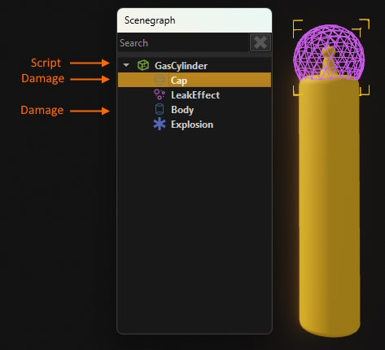

Messaging
For an introduction what a message is and how it fits into the overall picture, see The World / Scenegraph System.
This documentation focuses on the C++ ezMessage class. The functionality exposed through other mechanisms, such as TypeScript, may be more limited in scope, but ultimately maps to the C++ implementation.
Messages can be sent from any code. They can only be received by components, though, as the messaging system is implemented by ezWorld.
Declaring a Message
A message has to be derived from ezMessage and contain a helper macro that implements some message specific functionality:
struct ezMsgSetText : public ezMessage
{
EZ_DECLARE_MESSAGE_TYPE(ezMsgSetText, ezMessage);
ezString m_sText;
};
In some cpp file you then also need to implement the message and set up basic reflection information:
EZ_IMPLEMENT_MESSAGE_TYPE(ezMsgSetText);
EZ_BEGIN_DYNAMIC_REFLECTED_TYPE(ezMsgSetText, 1, ezRTTIDefaultAllocator<ezMsgSetText>)
EZ_END_DYNAMIC_REFLECTED_TYPE;
This is all that is needed to send and receive the message in C++ code.
Note:
The code above does not add reflection for each message member, as that is not necessary to make this message work. However, if you want to send and receive this message from non-C++ code, for example from TypeScript, then reflecting the members is necessary for the language binding to work. Be aware though, that language bindings may not support all types of reflected members and would ignore those.
Message Handlers
For each message type that your component is supposed to receive, you need to add a function that takes the respective component types as the only argument:
void DisplayMsgComponent::OnSetText(ezMsgSetText& msg)
{
m_sCurrentText = msg.m_sText;
}
void DisplayMsgComponent::OnSetColor(ezMsgSetColor& msg)
{
m_TextColor = msg.m_Color;
}
Finally, you also need to register these functions as message handlers, in the component's reflection information:
EZ_BEGIN_MESSAGEHANDLERS
{
EZ_MESSAGE_HANDLER(ezMsgSetText, OnSetText),
EZ_MESSAGE_HANDLER(ezMsgSetColor, OnSetColor)
}
EZ_END_MESSAGEHANDLERS;
Now this component is ready to receive messages of those types.
Sending Messages
To send a message, first create an instance on the stack (don't heap allocate them) and then call one of the SendMessage() functions:
ezMsgSetText textMsg;
textMsg.m_sText = m_TextArray[idx];
pGameObject->SendMessageRecursive(textMsg);
Message Routing
There are several ways a message can be sent. Which function you use determines which components may see the message and also how efficient the delivery will be.
You can send functions either through an ezGameObject, through an ezComponent or through an ezWorld. It is differentiated between sending a message (direct) and posting a message (delayed).
- Messages sent through functions on
ezComponentwill always only be received by exactly that component and no one else. - Messages sent through
ezGameObjectare broadcast to all components on that object. If one of theRecursivevariants is used, the messages are additionally delivered to all components on all child objects. - When sending messages through
ezWorld, you identify the target through a handle (ezGameObjectHandleorezComponentHandle). In this case the world takes care of resolving the handle for you. If the target object does not exist anymore, the message won't be handled by anyone.
If you call SendMessage(), the message is delivered immediately. That also means that all message handlers will access the same message object. This can be used to query information, as the message handler can write data back to the message. If the message is meant to be sent to multiple receivers, the code must take care to properly append or aggregate the results. Messages are never delivered multi-threaded, though.
If you call PostMessage(), the message is delivered delayed. These messages are queued and delivered when their time has come. If the target does not exist anymore at that time, the message is discarded with no effect. Posted messages can't be used to retrieve a result. Internally, posted messages will be copied, so you still don't need to allocate them on the heap.
Apart from a time delay, when posting a message you also have to specify a phase in which to deliver the message (see ezObjectMsgQueueType). This is used for special cases, where you want to tightly control at what time during the world update the message should arrive. For most cases using ezObjectMsgQueueType::NextFrame is the right choice.
Event Messages
Event messages are a special type of message with a different kind of semantic. Regular messages are used to 'instruct' components to do something. For example to switch something on, or to apply a physical force to it. These things can be implemented differently by different component types, but generally the calling code assumes them to do something. When messages are broadcast (instead of sending them to a single component directly), all targeted components get the message.
Event messages on the other hand, are used to 'inform' an object hierarchy that something happened. An example would be ezMsgDamage which is used to inform an object that it received damage. For these kind of messages you only want one component to handle it. This will often be a very high-level component like a custom component representing the player or an NPC.
These types of components are typically attached to the very top of a prefab structure and they are supposed to manage the overall game logic for this object. Therefore the message routing for event messages follows a different pattern: when you call ezGameObject::SendEventMessage() on a node, the message is delivered to the closest parent node that has a component of type ezEventMessageHandlerComponent.
The ezEventMessageHandlerComponent interface is only implemented by very few component types. Out of the box, only by ezTypeScriptComponent and ezVisualScriptComponent, meaning only components used to provide scripting functionality are currently capable of handling event messages. However, if you were to write your own NPC class, that is supposed to implement actual game logic (and not just path finding), then it makes sense to make it an ezEventMessageHandlerComponent.
Note that once an ezEventMessageHandlerComponent is attached to a node, it will receive all event messages below that node hierarchy, no matter whether it has a message handler for it or not. It therefore prevents event messages from leaving the hierarchy by default. If an event message is supposed to 'bubble up' further, the message handler component must forward the message manually.
Example: Gas Cylinder
This prefab has two physics shapes. One for the body, one for the cap. If the body receives too much damage, the cylinder is supposed to explode. If the cap receives enough damage, the cylinder is supposed to start ventilating burning gas, fly off and explode after a while.

To implement this, we attach a script component to the very top of the hierarchy. The script contains a message handler for ezMsgDamage. When a projectile hits the cylinder, it calls ezGameObject::SendEventMessage() on the node whose physics shape it hit. The event message contains the information through which game object and which component it was sent.
The message is then delivered to the closest parent node that handles event messages, which in this case is the GasCylinder node, because it has the script attached. The script can then differentiate what child node was hit and implement the desired game logic:
Declaring Event Messages
The only difference between regular messages and event messages is, that event messages must be derived from ezEventMessage.
Sending Event Messages
You can send event messages to every object using ezGameObject::SendEventMessage(). This will determine the closest parent to handle events on the fly and deliver the message accordingly.
For components that regularly raise events to the same object hierarchy (their own), such as trigger components, it is more efficient to have a member of type ezEventMessageSender<>. Sending a message through this object will cache the receiving target and be more efficient the second time.
If a component that is an ezEventMessageHandlerComponent itself wants to send an event message further up the hierarchy, it has to send the event to its own parent node.
Caution:
Event messages are also just regular messages and can be sent that way using
SendMessage()orPostMessage(). If you accidentally use those functions, rather thanSendEventMessage()orPostEventMessage(), your message will not get delivered as intended.
Global Event Message Handlers
If an event is sent to a hierarchy that has no event handler component, it is ultimately delivered to a global event handler. A global event handler is simply a component that has the HandleGlobalEvents property enabled.
A global event handler can be useful as a catch-all level scripts. This way you can place buttons around a level, and have a single script that receives the message when one of them is pressed. Each button has its own script to implement its logic (when you can press it, how it changes its appearance and so on), but the button script then just raises a generic "button pressed" event on its own parent node. If those buttons don't have an event handling parent node, the message is delivered to the level script, which can then handle the logic of all those buttons.
Be careful though when using multiple global event handler components. Every type of message is only delivered to a single handler, so as long as each global handler takes care of a different type, it will work as expected.
Message Serialization
For regular messages you don't need to implement any serialization, as they are short lived within the same process. However, if you intend to record messages or send them across a network, you can utilize ezMessage::PackageForTransfer() and ezMessage::ReplicatePackedMessage(). To make these functions work, you need to override and implement ezMessage::Serialize() and ezMessage::Deserialize().